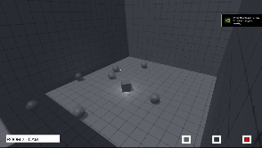
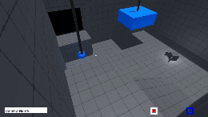
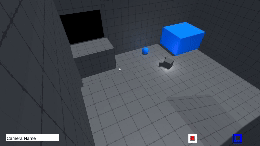

ROBERT LI >>> VESSELtechnical game designer |
|||
| Discord |
In the next iteration, I set out to address the issues uncovered in PROTOTYPE 0.
Problem 1: Lack of Meaningful Actions To make the gameplay more engaging, I’ve developed a new mechanic that fuses "mental mapping" with "multiple perspectives." This creates an interactive action that lets players actively connect the dots between different viewpoints.
Problem 2: Unclear and Academic Interactive Map The previous interactive map felt too much like an architectural exam. My solution is to remove it and instead challenge the player's spatial abilities through puzzles. Rather than manually plotting the layout, players will solve puzzles that require them to mentally map the space based on fragmented, multi-perspective clues.
This refined approach retains the core design goal—testing mental mapping through observation—but transforms it into a more intuitive and fun experience.

The core concept remains unchanged: switch between cameras to uncover different perspectives, mentally map the space, and find the exit. Instead of plotting an exact layout on an interactive map, players now solve the spatial puzzle simply by locating and reaching the exit. As long as you figure out where the exit is, the challenge is conquered.

I added a “SWAP camera” with a blue border. When two blue-highlighted objects are visible, their positions automatically swap. This mechanic reinforces the core gameplay—switching perspectives—and lets players make strategic decisions using their spatial knowledge.

Players can now grab the blue ball and carry it around, deepening their spatial understanding and unlocking new puzzle challenges. To solve these puzzles, players must synthesize information from multiple camera perspectives into actionable knowledge. Based on extensive playtesting feedback, I'm excited to move forward with this design.